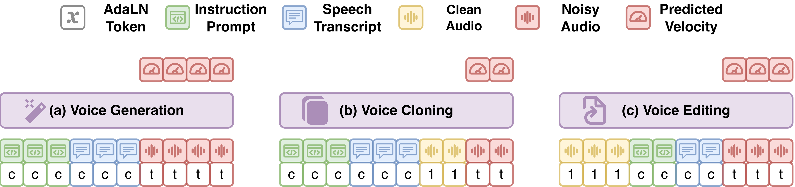

VoiceDesigner: Text-to-Voice Generation and Editing via Unified Diffusion Modeling and Data Augmentation
Work done during Jiarui Hai’s internship at Adobe
TL;DR
A unified model for generating, cloning, and editing voices.
Built for both natural everyday speech and expressive character voices.
Model Overview

A multimodal diffusion transformer handles all three tasks in a unified model.
Audio Examples & Additional Materials
Character Voice Design
Design character voices from text descriptions of persona, tone, and delivery.
Note: VoiceDesigner+ is the VoiceDesigner output after an enhancement post-processing step. See the paper for details.
| Prompt | ElevenLabs | Qwen3-TTS | VoiceDesigner | VoiceDesigner+ |
|---|---|---|---|---|
| A male young crown heir, exhilarated and proud, speaking with a bright and confident voice full of eagerness. | ||||
| A male grand mentor, patient and wise, speaking with a steady warm voice that soothes the mind while guiding each word with certainty. | ||||
| A female dark sorceress and forbidden scholar. Her voice is raspy and sinister. | ||||
| A young princess and sheltered crown heir in the palace gardens at sunrise, thrilled by her first independence. Her voice is bright and confident, filled with youthful excitement. | ||||
| A male hardened bounty hunter, fearless and relentless, speaking in a cold rugged voice shaped by scars, steel, and years of battle. | ||||
| A male mythic guardian, colossal and ancient, his resonant voice carrying sub-bass tremors and seismic vibration that echo across the ground beneath him. | ||||
| A female artificial intelligence interface and system guide. Her voice is robotic, musical, and rhythmically stepped in pitch. | ||||
| A female ultimate authority and control-obsessed ruler. Her voice is emotionless and commanding, heavy with inevitability. | ||||
| A male food mascot, goofy and clueless, speaking in a clumsy low-pitched lovely voice with a nasal tone bubbling with uncontainable happiness. | ||||
| A female sarcastic sidekick and cynical observer. Her voice is flat, nasal, and low-energy, filled with tired irritation. | ||||
| A male cosmic visitor, curious and harmless, speaking in a small squeaky voice that sounds otherworldly but friendly. | ||||
| A female abyss monarch and corrupted ruler overtaken by demonic possession. Her voice is heavy and resonant, two voices overlapping in infernal authority. |
Expressive Speech Generation
Generate expressive speech from text descriptions of voice, accent, style, and emotion.
Note: VoiceDesigner+ is the VoiceDesigner output after an enhancement post-processing step. See the paper for details.
| Prompt | CapSpeech | ElevenLabs | Qwen3-TTS | VoiceDesigner | VoiceDesigner+ |
|---|---|---|---|---|---|
| A young woman speaking with happiness in her voice, sounding warm and bright as she talks. | |||||
| A young man with an American accent speaking with energetic excitement. | |||||
| A senior man with a British accent speaking with pride, his voice deep, steady, and confident as he talks. | |||||
| A woman with an Indian accent, her voice carrying sadness. | |||||
| A young woman who has an Australian accent speaks in a quiet voice filled with fear. | |||||
| A middle-aged British man is speaking contemptuously. | |||||
| A senior man with an Australian accent, he speaks slowly with boredom. | |||||
| A man with an Indian accent, speaking with uncertainty and confusion. | |||||
| A female speaker is delivering her words with clear anger. | |||||
| A young woman speaking in a quiet, breathy whisper, gentle and careful. |
Voice Style Editing
Edit voice style and emotion using natural language instructions.
Note: All reference speakers are unseen during training of VoiceDesigner.
| Reference Audio & Edit Instruction | Step-Audio-EditX | IndexTTS-2 | VoiceDesigner |
|---|---|---|---|
|
Make him speak in a fearful tone. |
|||
|
Make her whisper softly. |
|||
|
Make this speaker sound fearful. |
|||
|
Make the speaker whisper softly. |
|||
|
Make her tone sound confused. |
|||
|
Make him sound surprised. |
|||
|
Make him speak in an angry tone. |
|||
|
Make the speaker sound surprised. |
|||
|
Make the speaker sound sad. |
|||
|
Make her sound happy and joyful. |
Extra Voice Editing Functions
Additional voice editing capabilities introduced in this work, which are not supported by previous studies.
Note:
All reference speakers are unseen during training.
DAW + VST Plugins denote manual audio editing with professional digital audio workstations and plugin effects.
| Reference Audio & Edit Instruction | DAW + VST Plugins | VoiceDesigner |
|---|---|---|
|
Make his voice timbre |
||
|
Make his voice |
||
|
Upshift pitch |
||
|
Downshift pitch |
||
|
Add a deep, dragon-like |
DSP-based Simulation
Data augmentation examples: input audio, DSP chain, and resulting output.
Note: Click an FX Chain label to view how the original is copied across channels, processed, and mixed.
| Original | FX Chain | Target |
|---|---|---|
3D RoPE Positions
Instruction runs to N-1; text and audio then branch on the other two axes.
Drag to rotate · Scroll to zoom